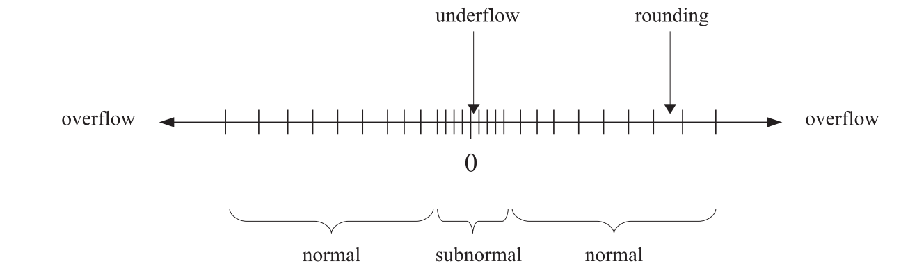

from math import sqrt
print(sqrt(2)**2 - 2)4.440892098500626e-16Numbers have doubt to be very important in physics: : both experimental measurements and theoretical calculations produce specific numbers. One also estimates the experimental or theoretical uncertainty associated with these values.
Experimentally, when we measure some quantities, we will only record the measurement results as numbers with finite lengh of digits. This length of digits is not only restricted by the finite precision of the measurement, but also by the finite amount of storage we have. For example, if we write down these numbers on paper, the longer digits we keep, the more space on paper we need. Likewise, if we store these data on a computer, only a finite number of digits can be stored in the finite storage in the computer.
Because of this, when we use computer to help us perform calculations and simulations, we have to keep in mind that we always make approximations to some (maybe unknown) true values. We have to make sure that such errors should not affect the underlying physics we want to explore.
In this section you will systematically learn the errors you may encounter. We will first introduce some terminologies.
We shall use accuracy to describe the match of a value with the (possibly unknown) true value. On the other hand, we use precision to denote how many digits we can use in a mathematical operation, no matter whether these digits are correct or not.
An inaccurate result arises when we have an error, which can due to a variety of reasons, and the limited precision is just one of them.
Besides the “human error” and measurement uncertainty, there are two typical types of errors in numerical computing:
Approximation errors. Example: when are trying to approximate the exponential \(e^x\) by the its Taylor series \[ y = \sum_{n=0}^{n_{max}}\frac{x^n}{n!}, \] we are limiting the sum to terms up to \(n_{max}\). Thus, the value of \(y\) for a given \(x\) may depend on \(n_{max}\).
Roundoff errors. These are also known as rounding errors. This type of error appears every time a calculation is carried out using floating-point numbers, as they don’t have infinite precision. For example, using real numbers, we have \((\sqrt{2})^2 - 2 = 0\). However, one can check in python
from math import sqrt
print(sqrt(2)**2 - 2)4.440892098500626e-16We will first introduce some basic concepts. Let’s say we want to study a quantity with exact value \(x\). If \(\tilde{x}\) is an approximate value for it, then we can define absolute error as \(\Delta x = \tilde{x} - x\).
We are interested in defining an error bound of the form \(|\Delta x| \leq \epsilon\) where we hope that \(\epsilon\) is “small”. This means that even though we don’t know the exact value of \(x\), we do know it could be at most \(\tilde{x} + \epsilon\) and at least \(\tilde{x} - \epsilon\).
Sometimes, the absolute error is not enough. For example, if we have \(x = 1000000000.0\), \(\tilde{x} = 999999999.0\), which corresponds to an absolute error \(\Delta x = -1\). Obviously, we should not say \(\Delta x\) is small. On the other hand, we do feel that \(x\) and \(\tilde{x}\) are close enough.
This is resolved by introducing a new definition, the relative error, defined as \[ \delta x = \frac{\Delta x}{x} = \frac{\tilde{x} - x}{x}, \] which is just the absolute error divided by the exact value. We can also define a bound for the relative error, \(|\delta x|\leq \epsilon\). Now the phrase \(\epsilon\) is small unambiguous, as it doesn’t depend on whether or not \(x\) is large. Sometimes, when defining the relative error, we can also use \(\tilde{x}\) instead of \(x\) in the denominator, since the exact value may be unknown.
Now, we will explore what happens when we put together the error bounds for two numbers \(a\) and \(b\) to produce an error bound for a third number \(x\), which is obtained from \(a\) and \(b\) via addition, subtraction, multiplication and division.
Let \(\tilde{a}, \tilde{b}\) be the approximate values for \(a, b\). We can write \(\tilde{a} = a+\Delta a\), \(\tilde{b}= b+\Delta b\). Thes, we have \[ \Delta x = \tilde{x} - x = (a+\Delta a \pm (b + \Delta b)) - (a \pm b) = \Delta a \pm \Delta b. \] Thus, \[ |\Delta x| = |\Delta a \pm \Delta b| \leq |\Delta a| + |\Delta b|. \]
This leads to the conclusion that in addition and subtraction adding together the bounds for the absolute errorsin the two numbers gi ves us the bound for the absolute error in the result.
Let us examine the special case: \(a\simeq b\). Let us work out the subtraction case \(x = a - b\). The relative error of \(x\) is bounded as \[ |\delta x | = \left|\frac{\Delta x }{x} \right| \leq \frac{|\Delta a | + |\Delta b|}{|a - b|}. \] As \(\Delta a = a\delta a\), \(\Delta b = b\delta b = a \frac{b}{a}\delta b\), the above condition becomes \[ |\delta x|\leq (|\delta a| + \frac{|b|}{|a|}|\delta b|)\frac{|a|}{|a - b|}. \] Since \(a\simeq b\), we have that \(|a-b| \ll |a|\), which implies that \(\frac{|a|}{|a - b|} \gg 1\). On the other hand, we have \(\frac{|b|}{|a|}\simeq 1\), and thus on the right hand side of the above inequality, the relative error bound of \(x\) is \((|\delta a|+ |\delta b|)\) multiplied by a very large factor, namely the relative error is greatly manified.
Example: Consider two numbers \(a= 1.251\) and \(b=1.239\). We approximate them as 1.25 and 1.24, respectively. The reiative error for these approximations are \(\delta a = -0.0008\) and \(\delta b = 0.0008\). Consider \(x = a - b = 0.012\). If we use the approximate values, we get \(\tilde{x} = 0.01\), and the relative error is \(\delta x = -0.002/0.012 = -0.167\). We see that \(|\delta x| \gg |\delta a|, |\delta b|\).
Let \(x = ab\), and \(\tilde{x} = \tilde{a}\tilde{b}\). Using the definitions, we have \(\tilde{a}= a(a+\delta a)\), \(\tilde{b} = b(1+\delta b)\). These give \[ \delta x = \frac{\tilde{x} - x}{x} = \frac{\tilde{a}\tilde{b} - ab}{ab} = \frac{a(1+\delta a)b(1+\delta b) - ab}{ab} = \delta a + \delta b, \] where in the last equality we dropped the term \(\delta a \delta b\) since it is product of two error terms. To derive an error bound, we take the absolute value and obtain \[ |\delta x | \leq |\delta a| + |\delta b|. \]
Consider \(y = f(x)\). We can calculate \[ \begin{align*} \Delta y &= f(\tilde{x}) - f(x) = f(x + \Delta x) - f(x) \\ & \simeq \frac{d f(x)}{dx} (\tilde{x} - x), \end{align*} \] where we have dropped higher order terms of \(\Delta x\). For the relative error, we have \[ \delta y = \frac{x}{f(x)} \frac{d f(x)}{dx} \delta x. \]
Consider a function of multiple variables, \(y = f(x_0, x_1, \dots, x_{n-1})\). One can show that \[ \Delta y = \sum_{i = 0}^{n-1} \frac{\partial f}{\partial x_i} \Delta x_i. \] For relative errors, we have \[ \delta y = \sum_{i = 0}^{n-1} \frac{x_i}{f(x_0,\dots,x_{n-1})} \frac{\partial f}{\partial x_i} \delta x_i. \]
In the following we will be focusing on the roundoff errors, which is due to finite-digit float number representation on a computer.
Computers use electrical circuits, which communicate using signals. The simplest such signals are on and off. These wo possibilities are known as binary digit or bit, represented by 0 or 1. All types of numbers are stored in binary form, as collections of 0s and 1s.
In Python, integers actually have unlimited precision, so we won’t have to worry about them. We will be focusing on the real numbers, which are stored using the floating-point representation in computers, with the general form \[ \pm \mathrm{mantissa} \times 10^{\mathrm{exponent}}. \] For example, one can represent the speed of light in vaccumm as \(+2.99792458 \times 10^8 \mathrm{m/s}\).
Computer only store a finite number of bits, so cannot store exactly all possible real numbers. In other words, there are only finitely many exact representations/machine numbers, which fall into two categories: normal and subnormal numbers. There are three ways of losing precision, as shown in Figure 1: underflow for very small numbers, overflow for very large (in absolute value) numbers, and rounding for decimal numbers whose value falls between two exactly representable numbers.

Python uses double-precision floating point numbers, also known as doubles, whose storage uses 64 bits in total. Doubles can represent \[ \pm 4.9 \times 10^{-324} \leftrightarrow \pm 1.8 \times 10^{308}. \]
The number of significant digits (precision) is 15 or 16 decimal digits for doubles.
# Overflow
large = 2.**1021
for i in range(3):
large *= 2
print(i,large)0 4.49423283715579e+307
1 8.98846567431158e+307
2 inf# rounding
small = 1/2**50
for i in range(3):
small /= 2
print(i, 1+small, small)0 1.0000000000000004 4.440892098500626e-16
1 1.0000000000000002 2.220446049250313e-16
2 1.0 1.1102230246251565e-16We know that \[ \begin{align*} &1.2345678912345678912−1.2345678900000000000\\ &= 0.0000000012345678912 \\ &= 1.2345678912 \times 10^{-9} \end{align*} \] Let us in the following do it in Python.
1.2345678912345678912 - 1.23456789000000000001.234568003383174e-09We see that the last few digits do not match the exact result. This is because of finite precision of the floating number storage (only up to 16 digits).
Only machine numbers are represented exactly, and other numbers are rounded to the nearest machine number. Thus, we should never compare floating-point variables \(\tilde{x}\) and \(\tilde{y}\) for equality. See the following example.
xt = 0.1 + 0.2
yt = 0.3
print(xt == yt)
print(xt, yt)False
0.30000000000000004 0.3The proper way should be to evaluate abs(xt - yt), where abs() denotes the absolute value. As long as this value is small, we can say xt and yt should be the same.
print(abs(xt - yt))
print(abs(xt - yt)<1e-12)5.551115123125783e-17
True#######################################
# More examples
#######################################
# First example
print(0.7 + 0.1 + 0.3)
print(0.7 + (0.1 + 0.3))
print('====================================')
# Second example
xt = 1.e20
yt = -1.e20
zt = 1.
print(xt + yt + zt)
print(xt + (yt + zt))1.0999999999999999
1.1
====================================
1.0
0.0In the above second example, if we first add up xt and yt, they cancel to 0 and then we simply get 1. On the other hand, if we first add yt and zt, we won’t get the small contribution of zt to the large value yt, and thus we will have “yt + zt = yt”. That’s why we at last get 0.
We will now show how easy it is to lose accuracy if one is not careful, and how straightforward it is to carry out an anlytical manipulation that avoids the problem.
The task at hand is to evaluate \[ f(x) = \frac{1}{\sqrt{x^2 + 1} - x} \] at large values of \(x\).
We will use the following list comprehension code.
from math import sqrt
def naiveval(x):
return 1/(sqrt(x**2 + 1) - x)
xs = [10**i for i in range(4,8)]
ys = [naiveval(x) for x in xs]
for x, y in zip(xs, ys):
print(x, y)
print(naiveval(1e8))10000 19999.99977764674
100000 200000.22333140278
1000000 1999984.77112922
10000000 19884107.85185185ZeroDivisionError: float division by zeroThe answer appears to be getting increasingly worse as the x is increased. If you test \(x = 10^8\), you even get an error ZeroDivisionError, because \(\sqrt{x^2 +1}\simeq x\) when \(x\) is large. We are having an issue of subtracting two large but nearly identical numbers.
An easy way to avoid this issue is to manipulate the original expression \[ f(x) = \frac{\sqrt{x^2 +1 } + x}{(\sqrt{x^2 +1} - x)(\sqrt{x^2 +1} +x)} = \sqrt{x^2 +1} + x. \] This expression has no issue of large number subtraction. When \(x\gg 1\), essentially we have \(\sqrt{x^2 +1} +x \simeq 2x\). In the following code, you see the result is very robust on any values of \(x\).
from math import sqrt
def neweval(x):
return sqrt(x**2 + 1) + x
xs = [10**i for i in range(4,8)]
ys = [neweval(x) for x in xs]
for x, y in zip(xs, ys):
print(x, y)
print(neweval(1e8))10000 20000.000050000002
100000 200000.00000499998
1000000 2000000.0000005001
10000000 20000000.000000052
200000000.0We want to compute the exponential function (assuming we have no access to the math library), by using the Taylor series: \[ e^x = 1 + x + \frac{x^2}{2!} + \frac{x^3}{3!} + \cdots. \] We shall approximate this expansion by keeping only the terms up to \(n_{max}\): \[ e^x \simeq \sum_{n=0}^{n_{max}} \frac{x^n}{n!}. \]
A naive implementation by directly computing the powers of \(x\) divided by the increasingly large factorial suffers from two problems:
Alternatively, we notice that the \(n\)-th term and \((n-1)\)-th term are related: \[ \frac{x^n}{n!} = \frac{x}{n}\frac{x^{n-1}}{(n-1)!}. \] Thus, we can get the new term by multiplying the old term by \(x/n\). We see that if \(x>n\), the magnitude of the term grows.
How should we determine the value of \(n_{nmax}\), namely when should we stop without going to the next term? We will terminate the loop when it is determined that adding the \(n\)-th term to the running total doesn’t change the sum. See the following code.
from math import exp
def compexp(x):
n = 0
oldsum, newsum, term = 0., 1., 1.
while newsum != oldsum:
oldsum = newsum
n += 1
term *= x/n
newsum += term
print(n, newsum, term)
return newsum
for x in (0.1, 20., -20.):
print("x, library exp(x):", x, exp(x))
val = compexp(x)x, library exp(x): 0.1 1.1051709180756477
1 1.1 0.1
2 1.105 0.005000000000000001
3 1.1051666666666666 0.0001666666666666667
4 1.1051708333333332 4.166666666666668e-06
5 1.1051709166666666 8.333333333333335e-08
6 1.1051709180555553 1.3888888888888892e-09
7 1.1051709180753966 1.9841269841269846e-11
8 1.1051709180756446 2.480158730158731e-13
9 1.1051709180756473 2.75573192239859e-15
10 1.1051709180756473 2.75573192239859e-17
x, library exp(x): 20.0 485165195.4097903
1 21.0 20.0
2 221.0 200.0
3 1554.3333333333335 1333.3333333333335
4 8221.000000000002 6666.666666666668
5 34887.66666666667 26666.66666666667
6 123776.55555555558 88888.8888888889
7 377744.8095238096 253968.25396825402
8 1012665.4444444446 634920.634920635
9 2423600.1887125224 1410934.744268078
10 5245469.677248678 2821869.488536156
11 10376141.474587142 5130671.797338465
12 18927261.136817917 8551119.662230777
13 32082829.84794219 13155568.711124273
14 50876499.435262576 18793669.58732039
15 75934725.55168976 25058226.116427187
16 107257508.19722374 31322782.645533983
17 144107840.72138137 36850332.52415763
18 185052654.63711208 40944813.9157307
19 228152458.75893387 43099804.12182178
20 271252262.88075566 43099804.12182178
21 312299695.3777288 41047432.49697313
22 349615543.10224986 37315847.724521026
23 382064106.3409638 32448563.238713935
24 409104575.7065587 27040469.365594946
25 430736951.1990347 21632375.492475957
26 447377240.0394008 16640288.840366121
27 459703379.9211535 12326139.881752681
28 468507765.5509768 8804385.629823344
29 474579755.64051014 6071990.089533341
30 478627749.0335324 4047993.393022227
31 481239357.6741919 2611608.6406595013
32 482871613.0746041 1632255.4004121884
33 483860858.7718236 989245.6972195081
34 484442768.00548214 581909.2336585342
35 484775287.5675727 332519.562090591
36 484960020.65762305 184733.09005032835
37 485059876.3819746 99855.72435152884
38 485112432.0263701 52555.644395541494
39 485139383.63888067 26951.612510534098
40 485152859.44513595 13475.806255267049
41 485159433.0091629 6573.564026959536
42 485162563.27774715 3130.2685842664455
43 485164019.21662354 1455.938876402998
44 485164681.0070219 661.7903983649991
45 485164975.13608783 294.1290659399996
46 485165103.0182904 127.88220258260851
47 485165157.43624896 54.41795854579086
48 485165180.11039835 22.674149394079524
49 485165189.3651532 9.254754854726336
50 485165193.0670551 3.701901941890535
51 485165194.51878136 1.4517262517217784
52 485165195.0771376 0.5583562506622225
53 485165195.28783804 0.2107004719480085
54 485165195.36587524 0.07803721183259574
55 485165195.3942524 0.028377167939125723
56 485165195.4043871 0.010134702835402045
57 485165195.4079431 0.0035560360825972084
58 485165195.4091694 0.0012262193388266236
59 485165195.40958506 0.0004156675724836012
60 485165195.40972364 0.00013855585749453372
61 485165195.40976906 4.542814999820777e-05
62 485165195.4097837 1.4654241934905732e-05
63 485165195.40978837 4.65214029679547e-06
64 485165195.4097898 1.4537938427485845e-06
65 485165195.4097903 4.4732118238417985e-07
66 485165195.4097904 1.3555187344975148e-07
67 485165195.40979046 4.046324580589596e-08
68 485165195.40979046 1.1900954648792928e-08
x, library exp(x): -20.0 2.061153622438558e-09
1 -19.0 -20.0
2 181.0 200.0
3 -1152.3333333333335 -1333.3333333333335
4 5514.333333333334 6666.666666666668
5 -21152.333333333336 -26666.66666666667
6 67736.55555555556 88888.8888888889
7 -186231.69841269846 -253968.25396825402
8 448688.93650793657 634920.634920635
9 -962245.8077601413 -1410934.744268078
10 1859623.6807760145 2821869.488536156
11 -3271048.116562451 -5130671.797338465
12 5280071.545668326 8551119.662230777
13 -7875497.165455947 -13155568.711124273
14 10918172.421864444 18793669.58732039
15 -14140053.694562742 -25058226.116427187
16 17182728.95097124 31322782.645533983
17 -19667603.57318639 -36850332.52415763
18 21277210.34254431 40944813.9157307
19 -21822593.779277474 -43099804.12182178
20 21277210.34254431 43099804.12182178
21 -19770222.154428817 -41047432.49697313
22 17545625.57009221 37315847.724521026
23 -14902937.668621726 -32448563.238713935
24 12137531.69697322 27040469.365594946
25 -9494843.795502737 -21632375.492475957
26 7145445.044863384 16640288.840366121
27 -5180694.836889297 -12326139.881752681
28 3623690.792934047 8804385.629823344
29 -2448299.296599294 -6071990.089533341
30 1599694.096422933 4047993.393022227
31 -1011914.5442365683 -2611608.6406595013
32 620340.8561756201 1632255.4004121884
33 -368904.841043888 -989245.6972195081
34 213004.39261464623 581909.2336585342
35 -119515.16947594477 -332519.562090591
36 65217.92057438358 184733.09005032835
37 -34637.803777145265 -99855.72435152884
38 17917.84061839623 52555.644395541494
39 -9033.77189213787 -26951.612510534098
40 4442.03436312918 13475.806255267049
41 -2131.529663830356 -6573.564026959536
42 998.7389204360893 3130.2685842664455
43 -457.19995596690865 -1455.938876402998
44 204.59044239809043 661.7903983649991
45 -89.53862354190915 -294.1290659399996
46 38.34357904069937 127.88220258260851
47 -16.074379505091493 -54.41795854579086
48 6.599769888988032 22.674149394079524
49 -2.6549849657383042 -9.254754854726336
50 1.0469169761522306 3.701901941890535
51 -0.4048092755695478 -1.4517262517217784
52 0.15354697509267468 0.5583562506622225
53 -0.05715349685533383 -0.2107004719480085
54 0.020883714977261908 0.07803721183259574
55 -0.007493452961863815 -0.028377167939125723
56 0.0026412498735382296 0.010134702835402045
57 -0.0009147862090589788 -0.0035560360825972084
58 0.00031143312976764483 0.0012262193388266236
59 -0.00010423444271595637 -0.0004156675724836012
60 3.432141477857734e-05 0.00013855585749453372
61 -1.1106735219630428e-05 -4.542814999820777e-05
62 3.5475067152753046e-06 1.4654241934905732e-05
63 -1.1046335815201656e-06 -4.65214029679547e-06
64 3.491602612284189e-07 1.4537938427485845e-06
65 -9.816092115576097e-08 -4.4732118238417985e-07
66 3.73909522939905e-08 1.3555187344975148e-07
67 -3.0722935119054536e-09 -4.046324580589596e-08
68 8.828661136887475e-09 1.1900954648792928e-08
69 5.379109064773582e-09 -3.449552072113892e-09
70 6.364695371091837e-09 9.855863063182549e-10
71 6.0870654256500746e-09 -2.7762994544176197e-10
72 6.164184854939453e-09 7.711942928937833e-11
73 6.1430562441752395e-09 -2.112861076421324e-11
74 6.148766679516919e-09 5.710435341679254e-12
75 6.147243896759137e-09 -1.5227827577811344e-12
76 6.147644629063816e-09 4.007323046792459e-13
77 6.147540542750912e-09 -1.0408631290370022e-13
78 6.147567231549093e-09 2.668879818043595e-14
79 6.147560474891326e-09 -6.756657767198975e-15
80 6.147562164055767e-09 1.6891644417997438e-15
81 6.147561746978127e-09 -4.17077639950554e-16
82 6.147561848704381e-09 1.0172625364647659e-16
83 6.147561824192031e-09 -2.4512350276259418e-17
84 6.147561830028305e-09 5.836273875299861e-18
85 6.147561828655064e-09 -1.3732409118352614e-18
86 6.147561828974423e-09 3.1935835158959566e-19
87 6.147561828901007e-09 -7.341571300910245e-20
88 6.147561828917692e-09 1.6685389320250557e-20
89 6.147561828913943e-09 -3.749525689943945e-21
90 6.147561828914776e-09 8.332279310986544e-22
91 6.147561828914593e-09 -1.8312701782388008e-22
92 6.147561828914633e-09 3.9810221266060887e-23
93 6.147561828914624e-09 -8.56133790667976e-24
94 6.147561828914626e-09 1.8215612567403748e-24
95 6.147561828914626e-09 -3.8348658036639467e-25We see that when \(x\) is small (\(x=0.1\)), the terms in the sum becomes smaller and smaller. The convergence was reached with only 10 loops.
For \(x=20\), it requires significantly more loops to reach convergence. Comparing our final answer and the math library exp() function, we find agreement in 15 decimal digits.
For \(x = -20\), our result and the one from exp() function only match in order of magnitude, but there is no decimal digits agreeing.
The problem in the case \(x=-20\) is that each term is accurate only up to 16 digits, namely the relative error is \(10^{-16}\). The largest term in this case is of order \(10^8\), which means the absolute error for the result will be at least \(10^8 \times 10^{-16} = 10^{-8}\). Since the final result is of order \(10^{-9}\), which means we will have \(10\%\) relative error and thus the result should not be trusted. For the \(x=20\) case, the absolute error is still \(10^{-8}\) but the final result is of order \(10^8\), thus the relative error is only \(10^{-16}\).
To avoid this issue for negative \(x\), we can actually manipulate the expression, by writing \[ e^{-x} = 1/e^x. \] Taking inverse will not change the number of significant digits and thus we won’t lose accuracy.
Here, we will examine the problem of recursion, where even a tiny error in the starting expression can be multiplied by the factorial of a large numbe. The task is to evaluate the integral of the form \[ f(n)= \int_0^1 x^n e^{-x} dx. \]
We can use integration by parts, to manipulate the above expression \[ \begin{align*} f(n) &= -\int_0^1 x^n d(e^{-x}) = -e^{-1} + n\int_0^1 x^{n-1}e^{-x}\\ &= nf(n-1)-e^{-1}. \end{align*} \] Particularly, we have \(f(0)=1-e^{-1}\). We can implement the above recursion relation.
from math import exp
def forward(nmax=22):
oldint = 1 - exp(-1)
for n in range(1,nmax):
print(n-1, oldint)
newint = n*oldint - exp(-1)
oldint = newint
print("n = 20 answer is 0.0183504676972562")
print("n, f[n]")
forward()n = 20 answer is 0.0183504676972562
n, f[n]
0 0.6321205588285577
1 0.26424111765711533
2 0.16060279414278833
3 0.11392894125692266
4 0.08783632385624829
5 0.07130217810979911
6 0.059933627487352314
7 0.05165595124002387
8 0.045368168748748605
9 0.04043407756729511
10 0.03646133450150879
11 0.033195238345154365
12 0.03046341897041005
13 0.028145005443888316
14 0.026150635042994086
15 0.024380084473468955
16 0.022201910404060943
17 0.009553035697593693
18 -0.19592479861475587
19 -4.090450614851804
20 -82.17689173820752As one can see, our result has a large error. This is because our evaluation contains \(n f(n-1)\). It means any errors in \(f(n-1)\) are magnified by a factor \(n\), which can be large.
The process we followed in the code above, starting at \(n=0\) and building up to a finite \(n\), is called forward recursion. This can be solved by a simple trick, using backward recursion. We can write \[ f(n-1) = \frac{f(n)+e^{-1}}{n}. \] See the following code.
from math import exp
def backward(nmax=31):
oldint = 0.01
for n in reversed(range(20,nmax)):
print(n, oldint)
newint = (oldint + exp(-1))/n
oldint = newint
print("n = 20 answer is 0.0183504676972562")
print("n, f[n]")
backward()n = 20 answer is 0.0183504676972562
n, f[n]
30 0.01
29 0.012595981372381411
28 0.013119842156683579
27 0.013607117261718784
26 0.014129131793820781
25 0.01469263742174089
24 0.015302883143727328
23 0.015965930179798738
22 0.016688929189184395
21 0.01748038047093758
20 0.018350467697256186We will employ an analytical trick in order to help us preserve significant figures. Observe that the product of the two roots obeys the relation: \[ x_+ x_- = \frac{c}{a}. \tag{2}\]
Now, we should use Equation 1 to calculate \(x_-\). Then, we should use Equation 2 to calculate \(x_+\), via division only.
Please write a Python code that evalutes and prints out (a). \(x_-\), (b). \(x_+\) using the “bad” formula, and (c). \(x_+\) using the “good” formula. Take \(a=1\), \(c=1\), \(b = 10^8\).